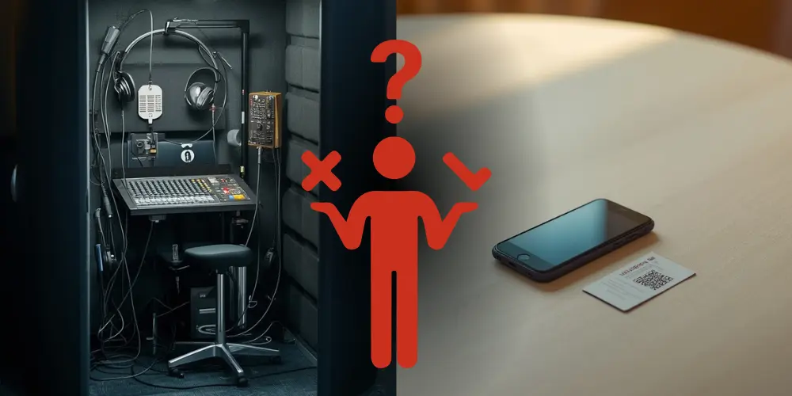

Rosa Sala
Founder of Nubart
Do You Need an Interpreter Booth? A Lighter Alternative for Smaller Multilingual Events
Everything is ready for tomorrow's multilingual seminar. The speakers are confirmed, the interpreters are booked… and then the interpretation equipment quote lands, and it's not far off what you're paying the interpreters themselves.
For a large conference running for days with six language pairs, that's simply the cost of doing business. For a half-day seminar with two languages, an occasional board meeting, or a venue that was never built to host a booth, it's a lot of infrastructure for a short amount of use.
This article looks at when a lighter setup — human interpreters plus a simple audio distribution layer — can reasonably stand in for a full interpreter booth, and when it can't.

Where Nubart LIVE comes from
Nubart LIVE is, first and foremost, a web-based system for human-guided live tours — city walks, factory visits, corporate site tours — built to get a guide's own voice clearly to every participant's smartphone, without hardware receivers or an app to install. In smaller multilingual events, that same distribution layer can carry an interpreter's voice instead of a tour guide's.
The part of the cost that's easy to overlook
Interpretation equipment rental is usually priced by the day, sometimes per booth, per receiver, or per technician. That's manageable when interpretation is the centerpiece of a multi-day conference. That's much harder to justify when the multilingual portion of your event is short or occasional. And cost isn't the only factor. Getting a booth to a venue means coordinating shipping, clearing space for it, and having someone on-site to set it up and take it down. All of that adds friction even before anyone puts on a headset.
Consider a multi-day corporate cruise: if you only need interpretation for a single two-hour session, traditional rental equipment still has to stay on board — and be paid for — for the entire voyage. A lighter setup sidesteps that fixed cost entirely.
The booth itself also solves a specific problem: it gives the interpreter acoustic isolation, so they can hear the source speaker clearly while interpreting aloud, without their own voice bleeding into the room or into the other language channel. That's a real function, and a lighter setup doesn't replace it: the interpreter still needs a reasonably quiet spot to work from.
What a lighter setup can remove is everything downstream of that: the wiring, the receivers, the logistics of getting equipment to and from the venue.
What Nubart LIVE actually replaces
In this scenario, Nubart LIVE replaces the wireless distribution hardware — the transmitter and receivers. It doesn't replace the interpreter, and it doesn't replace the booth's acoustic isolation.
Human interpreters vs. the AI translation add-on
Nubart LIVE can be used two different ways in multilingual events. With human interpreters, as described here, it simply delivers their voice to participants' phones. With the optional AI translation add-on switched on, it can instead provide machine translation to many languages at once — a fit for guided tours more than formal interpreted sessions. This article covers the first case only: interpreters using Nubart LIVE as their distribution channel, not as a substitute for professional interpretation.
Because no automated translation engine is involved in this setup, there's also no risk of background noise confusing a speech-recognition system. The audience simply hears their interpreter, background noise and all — the same as they would sitting in the room with them.
Running a multilingual event with Nubart LIVE
Traditional interpretation setup
Rent equipment
Interpreter booth, transmitter and wireless receivers
Set everything up
Booth, cabling, receivers and headsets
Audience listens
Using rented receivers and headsets
Nubart LIVE
Interpreters open their session
Each interpreter logs in from their own smartphone.
Interpreters scan the cards
Each interpreter scans a set of QR cards before participants arrive.
Participants receive a card
At the entrance, each attendee simply gets the card for the language they want to hear.
Participants listen
Participants scan their card once. After that, they simply tap "Listen". They don't need to scan the QR code again unless they leave the session.
A typical event
Imagine you're hosting a seminar with English- and French-speaking guests. Before the audience arrives, each interpreter logs into Nubart LIVE from their own smartphone. The optional AI translation add-on remains switched off, because only the interpreters' own voices will be transmitted.
Each interpreter then scans a stack of Nubart LIVE cards. Those cards now belong to that interpreter's listening group until the session is closed.
At registration, participants simply receive the card for the language they want to hear. They scan it once with their own phone and immediately join the correct listening channel. No app installation is required.
During the session, interpreters work exactly as they normally would. Nubart LIVE simply relays their voice over the internet to the participants' phones, replacing the traditional transmitter and wireless receivers.
When the event finishes, there are two possibilities:
- Close the group. Any cards that weren't distributed immediately become available again and can be reused for the next event.
- Keep the group open. If the same participants will attend another interpreted session the next day, they can simply keep their cards. There's no need to scan everything again.
The QR cards don't represent a language by themselves. They simply connect participants to whichever interpreter scanned them before the event. That's why the same cards can be reused again and again for future events.
At a glance
| Traditional booth setup | Nubart LIVE (human interpreter) | |
|---|---|---|
| Booth / acoustic isolation | Provided | Interpreter arranges a quiet space |
| Transmitter & wireless receivers | Required | Not needed — phones act as receivers |
| Audience devices | Provided by rental company | Participants' own smartphones (BYOD) |
| Headset distribution & sanitizing | Required | Not needed (optional own earbuds) |
| Setup / teardown | AV technician, cabling, floor space | Interpreter logs in from a browser |
| Cost structure | Daily/per-event rental | One-time card purchase |
Interpretation equipment, without the fixed installation
For events where a full interpretation equipment rental is more than the occasion calls for, a portable interpretation system built around smartphones and printed cards can cover the same basic need, getting an interpreter's voice to a specific group of listeners, without the fixed installation. It works equally well as a wireless interpretation equipment substitute in venues where running cabling or setting up a booth simply isn't practical.
Where this fits well
Smaller conferences and seminars with one or two language pairs. Works well with up to a few dozen participants per language, where interpreters don't need strict ISO-booth conditions.
Occasional multilingual board meetings or panels. Ideal for a standard meeting room, with the interpreter placed in a nearby quiet space and a headset for source audio.
Pop-up events or unconventional venues. Works well as long as mobile coverage or Wi-Fi at the venue is stable enough for every participant's phone — worth checking in advance.
Multi-day vessels and similarly self-contained settings. Works well when the goal is avoiding daily equipment rental fees in favor of a one-time card purchase that covers the whole trip.
Picture, for example, a half-day seminar with German- and English-speaking guests. Renting full booths and receivers for forty participants would consume most of the budget. Instead, the organizer books one interpreter per language, sets each of them up in a quiet adjoining space, and distributes Nubart LIVE cards by language at the door. Participants listen on their own phones and earbuds, and the only equipment on the invoice is the cards themselves.
When a traditional interpreter booth is still the better choice
This setup isn't meant to compete with full conference-grade interpretation infrastructure. A traditional booth remains the right choice for:
- International congresses and formal multi-day conferences
- Events with strict ISO-booth requirements
- Many simultaneous language pairs running in parallel
- Broadcast events, where audio quality standards are stricter
- Noisy exhibition halls, where the interpreter genuinely needs sealed isolation
Nubart LIVE is a lighter alternative for smaller or shorter events — not a replacement for high-end conference infrastructure.
What you need for this lighter setup
- A human interpreter with a reasonably quiet space and a headset or good source audio
- Reliable mobile data or Wi-Fi at the venue, ideally tested in advance
- One reasonably modern smartphone per interpreter, used as the Nubart LIVE "guide" device
- Printed Nubart LIVE cards with unique QR codes, one per participant
- Optional: headphones or earbuds for participants, especially for sessions longer than a few minutes
Frequently asked questions
Is there an alternative to renting an interpreter booth? For smaller or shorter events, yes. Your interpreter can work from their own smartphone as a "guide" on Nubart LIVE, and the audience listens through individual cards instead of wired or wireless receivers. It won't replace a booth's acoustic isolation for the interpreter, but it does remove the need to rent and set up distribution hardware. For large, formal conferences with many language channels, a traditional booth setup is still the better fit.
Is simultaneous interpretation without a booth possible? Yes, as long as the interpreter has a reasonably quiet space to work from. The booth's main function — isolating the interpreter acoustically — still needs to be handled some other way, but the distribution equipment side can be handled without one.
What counts as interpretation equipment in this kind of setup? Traditionally, interpretation equipment means a booth, a transmitter, and wireless receivers or headsets for each listener. In a lighter setup, the only "equipment" is the smartphones your interpreter and audience already carry, plus a set of printed cards.
Does this work if I have more than one language at the same event? Yes. Each interpreter runs their own independent channel — one guide login, one set of cards, per language — and the audio streams don't interfere with each other. It's still worth placing interpreters so their spoken voices don't disturb each other or the main floor language in the room.
Do participants need headphones? It's not required, but it's recommended for anything longer than a few minutes — holding a phone to your ear for an extended talk gets uncomfortable fast. For formal events, consider including simple wired earbuds in the welcome pack.
Interested in whether this fits your event? Request a free Nubart LIVE trial kit and test it with your own interpreters before committing:
Request a Nubart LIVE trial kit